Shapes
–– For Solid and Visual ––
Sphere
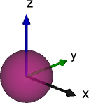
Modia3D.Shapes.Sphere — TypeSphere(; diameter=1.0)Generate a new solid or visual shape representing a sphere. The reference frame = Object3D frame is located at the center of the sphere.
Arguments
diameterdefines the diameter of the sphere.
Ellipsoid
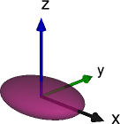
Modia3D.Shapes.Ellipsoid — TypeEllipsoid(; lengthX=1.0, lengthY=1.0, lengthZ=1.0)Generate a new solid or visual shape representing an ellipsoid. The reference frame = Object3D frame is located at the center of the ellipsoid.
Arguments
lengthXdefines the length of the ellipsoid in x-direction.lengthYdefines the length of the ellipsoid in y-direction.lengthZdefines the length of the ellipsoid in z-direction.
Box
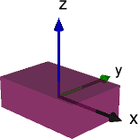
Modia3D.Shapes.Box — TypeBox(; lengthX=1.0, lengthY=1.0, lengthZ=1.0)Generate a new solid or visual shape representing a box. The reference frame = Object3D frame is located at the center of the box.
Arguments
lengthXdefines the length of the box in x-direction.lengthYdefines the length of the box in y-direction.lengthZdefines the length of the box in z-direction.
Cylinder
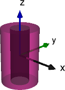
Modia3D.Shapes.Cylinder — TypeCylinder(; axis=3, diameter=1.0, length=1.0, innerDiameter=0.0)Generate a new solid or visual shape representing a cylinder. The reference frame = Object3D frame is located at the center of the cylinder.
Arguments
axisdefines the rotation axis of the cylinder: 1=x; 2=y; 3=z.diameterdefines the diameter of the cylinder.lengthdefines the length of the cylinder.innerDiameterdefines the inner diameter of the cylinder (whereinnerDiameter=0defines a full cylinder).
Notes
innerDiameteris not supported by collision.
Cone
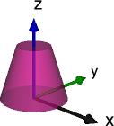
Modia3D.Shapes.Cone — TypeCone(; axis=3, diameter=1.0, length=1.0, topDiameter=0.0)Generate a new solid or visual shape representing a circular cone or a frustum of a circular cone. The reference frame = Object3D frame is located at the center of the base circle of the cone/frustum.
Arguments
axisdefines the rotation axis of the cone/frustum: 1=x; 2=y; 3=z.diameterdefines the diameter of the base circle of the cone/frustum.lengthdefines the length of the cone/frustum.topDiameterdefines the diameter of the top circle of the frustum (wheretopDiameter=0defines a right cone).
Capsule
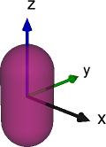
Modia3D.Shapes.Capsule — TypeCapsule(; axis=3, diameter=1.0, length=1.0)Generate a new solid or visual shape representing a capsule assembled by a cylinder and two half spheres. The reference frame = Object3D frame is located at the center of the capsule.
Arguments
axisdefines the rotation axis of the capsule: 1=x; 2=y; 3=z.diameterdefines the diameter of the capsule.lengthdefines the length of the middle cylindrical part of the capsule.
Notes
- Some versions of SimVis visualize half ellipsoids with semi-axis length
length/2instead of spheres with diameterdiameter.
Beam
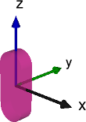
Modia3D.Shapes.Beam — TypeBeam(; axis=3, length=1.0, width=0.2, thickness=0.1)Generate a new solid or visual shape representing a beam assembled by a box and two half cylinders. The reference frame = Object3D frame is located at the center of the beam.
Arguments
axisdefines the longitudinal axis of the beam: 1=x; 2=y; 3=z.lengthdefines the box length of the beam. The total length of the beam islength + width.widthdefines the width (= cylinder diameter) of the beam.thicknessdefines the thickness of the beam.
The dimension directions depend on axis by circularly shift:
axis | length | width | thickness |
|---|---|---|---|
| 1 | x | y | z |
| 2 | y | z | x |
| 3 | z | x | y |
FileMesh
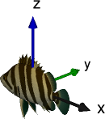
Modia3D.Shapes.FileMesh — TypeFileMesh(; filename::AbstractString="", scale=SVector{3,Float64}(1.0,1.0,1.0),
useMaterialColor::Bool=false, smoothNormals::Bool=false, convexPartition::Bool=false)Generate a new solid or visual shape representing a mesh. The reference frame = Object3D frame is defined by the mesh data.
Arguments
filenamedefines the name of the mesh file.scaledefines the scaling factors to be applied in x-, y- and z-direction.useMaterialColordefines if the material color of the shape is to be considered.smoothNormalsdefines if smoothing of mesh normals is active.convexPartitiondefines if partitioning into convex sub meshes is active.
Notes
- Solid features are supported for MeshIO.jl file formats including obj and stl.
- Visual features are supported for SimVis file formats 3ds, dxf, obj and stl.
- FileMesh is not directly supported by animation export. You have to convert your mesh file into the three.js json object scene format first and store it in the same folder as your mesh file.
–– Only for Visual ––
CoordinateSystem
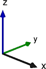
Modia3D.Shapes.CoordinateSystem — TypeCoordinateSystem(; length=1.0)Generate a new visual shape representing a coordinate system. The reference frame = Object3D frame coincides with the coordinate system.
Arguments
lengthdefines the length of the coordinate system axes.
Grid
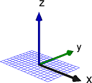
Modia3D.Shapes.Grid — TypeGrid(; axis=3, length=1.0, width=0.6, distance=0.1, lineWidth=1.0)Generate a new visual shape representing a planar grid. The reference frame = Object3D frame is located at the center of the grid.
Arguments
axisdefines the normal axis of the grid: 1=x; 2=y; 3=z.lengthdefines the length of the grid.widthdefines the width of the grid.distancedefines the distance of the grid lines.lineWidthdefines the line width of the grid.
The dimension directions depend on axis by circularly shift:
axis | length | width |
|---|---|---|
| 1 | y | z |
| 2 | z | x |
| 3 | x | y |
Spring
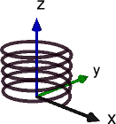
Modia3D.Shapes.Spring — TypeSpring(; axis=3, length=1.0, diameter=1.0, wireDiameter=0.05, windings=5)Generate a new visual shape representing a helical spiral spring. The reference frame = Object3D frame is located at the center of the base circle of the spring.
Arguments
axisdefines the axis of the spring: 1=x; 2=y; 3=z.lengthdefines the length of the spring.diameterdefines the diameter of the spring.wireDiameterdefines the diameter of the spring wire.windingsdefines the number of windings of the spring.
Notes
- SimVis visualizes whole-numbered values of
windings. - Spring is not supported by animation export.
GearWheel
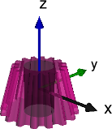
Modia3D.Shapes.GearWheel — TypeGearWheel(; axis=3, diameter=1.0, length=1.0, innerDiameter=0.0, angle=0.0, teeth=20)Generate a new visual shape representing a gearwheel. The reference frame = Object3D frame is located at the center of the gearwheel.
Arguments
axisdefines the rotation axis of the gearwheel: 1=x; 2=y; 3=z.diameterdefines the diameter of the gearwheel.lengthdefines the length of the gearwheel.innerDiameterdefines the inner diameter of the gearwheel (whereinnerDiameter=0defines a full gearwheel).angledefines the bevel angle of the gearwheel (whereangle=0defines a cylindrical gearwheel).teethdefines the number of teeth of the gearwheel.
Notes
- GearWheel is not supported by animation export.
TextShape

Modia3D.Shapes.TextShape — TypeTextShape(; text="Hello world", font=Font(), offset=[0.0,0.0,0.0],
axisAlignment=Screen, alignment=Center)Generate a new visual shape representing a text shape.
Arguments
text::AbstractString: String of the textfont::Font:Fontof the textoffset: a 3D vector as offset from origin to text alignment pointaxisAlignment::Modia3D.AxisAlignment: alignment of textModia3D.Screen: parallel to screenModia3D.XY_Plane: in xy-planes of Object3DModia3D.XZ_Plane: in xz-planes of Object3DModia3D.YZ_Plane: in yz-planes of Object3D
axisAlignment::Modia3D.Alignment: defines the direction the text is displayed, relative to its originModia3D.Left,Modia3D.RightorModia3D.Center
Notes
- TextShape is not supported by the community edition of SimVis.
- TextShape is not supported by animation export.
Examples
import Modia3D
font = Font(fontFamily="Arial", charSize=0.4, color="MediumVioletRed")
text1 = TextShape("This is a box")
text2 = TextShape("This is the xy plane";
font = font, axisAlignment=Modia3D.XY_Plane,
alignment = Modia3D.Left)Modia3D.Shapes.Font — TypeFont(; fontFamily="FreeSans", bold=false, italic=false,
charSize=0.1, color=defaultColor(), transparency=0.0)Generate a Font.
Arguments
fontFamily: name of the font family- "FreeSans", "FreeSerif", "Arial", "ArialNarrow", "CourierNew", "TimesNewRoman", or "Verdana"
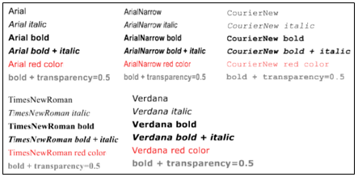 Courtesy to DLR Visualization Library
bold: if true, the text is displayed in bold font.italic: if true, the text is displayed in italic font.charSize: character size in [m].colordefines the material color as a String or RGB values. In case of Strings the color is constructed using Colors.jl. So named colors and many other kinds of color specifications are available. In addition, colors can be directly defined by a vector of RGB values. E.g.color="MediumVioletRed"orcolor=[255, 0, 0].transparency: transparency of the fon , 0.0 (opaque) ... 1.0 (transparent)
Notes
fontFamilylike "Arial", "Verdana" are only supported under Windows.
Examples
import Modia3D
font1 = Font()
font2 = Font(fontFamily="Arial", bold=true, charSize=0.2,
color="LightBlue", transparency=0.5)ModelicaShape
Modia3D.Shapes.ModelicaShape — TypeModelicaShape(; type=1, lengthX=1.0, lengthY=1.0, lengthZ=1.0, extra=[0.0, 0.0, 0.0])Generate a new visual shape according to the Modelica Visualization Library.
Arguments
typedefines the type of the shape: 1=box; 2=sphere; 3=cylinder; 4=cone; 5=capsule; 6=coordinate system; 7=spring; 8=gearwheel; 9=pipe; 10=grid; 11=beam.lengthXdefines the length of the shape in x-direction.lengthYdefines the length of the shape in y-direction.lengthZdefines the length of the shape in z-direction.extradefines extra parameters for cone, pipe, spring and gearwheel.
Notes
- ModelicaShape is intended for import of Modelica models and not for Modia3D models.
- ModelicaShape is not supported by animation export.